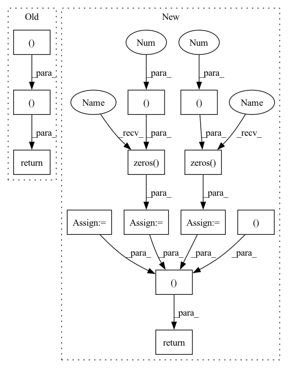

Pattern ID :38069

Before Change
py = np.clip(py, 0, height - 1)
heightmap[py, px] = points[:, 2] - bounds[2, 0]
for c in range(colors.shape[-1]):
colormap[py, px, c] = colors[:, c]
segmmap[py, px] = ids[:]
return heightmap, colormap, segmmap
After Change
heightmap = np.zeros((height, width), dtype=np.float32)
colormap = np.zeros((height, width, colors.shape[-1]), dtype=np.uint8)
segmmap = np.zeros((height, width), dtype=np.int32)
positionmap = np.zeros((height, width, 3), dtype=np.float32)
posemap = np.zeros((height, width, 3), dtype=np.float32)
// Filter out 3D points that are outside of the predefined bounds.
ix = (points[..., 0] >= bounds[0, 0]) & (points[..., 0] < bounds[0, 1])
iy = (points[..., 1] >= bounds[1, 0]) & (points[..., 1] < bounds[1, 1])
iz = (points[..., 2] >= bounds[2, 0]) & (points[..., 2] < bounds[2, 1])
valid = ix & iy & iz
points = points[valid]
colors = colors[valid]
ids = ids[valid]
positions = positions[valid]
poses = poses[valid]
// Sort 3D points by z-value, which works with array assignment to simulate
// z-buffering for rendering the heightmap image.
iz = np.argsort(points[:, -1])
points, colors, ids, positions, poses = (
points[iz],
colors[iz],
ids[iz],
positions[iz],
poses[iz],
)
px = np.int32(np.floor((points[:, 0] - bounds[0, 0]) / pixel_size))
py = np.int32(np.floor((points[:, 1] - bounds[1, 0]) / pixel_size))
px = np.clip(px, 0, width - 1)
py = np.clip(py, 0, height - 1)
heightmap[py, px] = points[:, 2] - bounds[2, 0]
colormap[py, px] = colors[:]
segmmap[py, px] = ids[:]
positionmap[py, px] = positions[:]
posemap[py, px] = poses[:]
return heightmap, colormap, segmmap, positionmap, posemap
In pattern: SUPERPATTERN
Frequency: 3
Non-data size: 13
Instances
Fragment ID: 109135489
Project Name: wkentaro/safepicking
Commit Name: 56af9845d0c8c6e658161267f7677966f24e646c
Time: 2021-07-02
Author: www.kentaro.wada@gmail.com
File Name: examples/target_pick/_get_heightmap.py
M Class Name: AnonimousClass
N Class Name: AnonimousClass
M Method Name: get_heightmap(7)
N Method Name: get_heightmap(5)
M Parent Class:
N Parent Class:
M File Name: examples/target_pick/_get_heightmap.py
N File Name: examples/target_pick/_get_heightmap.py
M Start Line: 23
M End Line: 47
N Start Line: 4
N End Line: 58
'>
Before Change
returns = values + advantages
advantages = (advantages - advantages.mean()) / (advantages.std() + 1e-10)
return advantages, returns
After Change
trans_shape_func = lambda x: x.reshape(trajectory_length, -1, 1)
rewards = trans_shape_func(rewards) // [trajectory length, parallel size, 1]
masks = trans_shape_func(masks) // [trajectory length, parallel size, 1]
values = trans_shape_func(values) // [trajectory length, parallel size, 1]
deltas = FLOAT(rewards.size()).to(device)
advantages = FLOAT(rewards.size()).to(device)
// calculate advantages in parallel
prev_value = torch.zeros((rewards.size(1), 1), device=device)
prev_advantage = torch.zeros((rewards.size(1), 1), device=device)
for i in reversed(range(rewards.size(0))):
deltas[i, ...] = rewards[i, ...] + gamma * prev_value * masks[i, ...] - values[i, ...]
advantages[i, ...] = deltas[i, ...] + gamma * tau * prev_advantage * masks[i, ...]
prev_value = values[i, ...]
prev_advantage = advantages[i, ...]
returns = values + advantages
advantages = (advantages - advantages.mean()) / (advantages.std() + 1e-10)
// reverse shape for ppo
return advantages.reshape(-1, 1), returns.reshape(-1, 1) // [trajectory length * parallel size, 1]
'>
Fragment ID: 109135601
Project Name: ritchiehuang/magail
Commit Name: 5f42babd1531e53f4852cdcb2ac2959f63b719e4
Time: 2020-04-24
Author: ritchie-huang@outlook.com
File Name: algos/GAE.py
M Class Name: AnonimousClass
N Class Name: AnonimousClass
M Method Name: estimate_advantages(6)
N Method Name: estimate_advantages(5)
M Parent Class:
N Parent Class:
M File Name: algos/GAE.py
N File Name: algos/GAE.py
M Start Line: 7
M End Line: 22
N Start Line: 32
N End Line: 66
'>
Before Change
py = np.clip(py, 0, height - 1)
heightmap[py, px] = points[:, 2] - bounds[2, 0]
for c in range(colors.shape[-1]):
colormap[py, px, c] = colors[:, c]
segmmap[py, px] = ids[:]
return heightmap, colormap, segmmap
After Change
heightmap = np.zeros((height, width), dtype=np.float32)
colormap = np.zeros((height, width, colors.shape[-1]), dtype=np.uint8)
segmmap = np.zeros((height, width), dtype=np.int32)
positionmap = np.zeros((height, width, 3), dtype=np.float32)
posemap = np.zeros((height, width, 3), dtype=np.float32)
// Filter out 3D points that are outside of the predefined bounds.
ix = (points[..., 0] >= bounds[0, 0]) & (points[..., 0] < bounds[0, 1])
iy = (points[..., 1] >= bounds[1, 0]) & (points[..., 1] < bounds[1, 1])
iz = (points[..., 2] >= bounds[2, 0]) & (points[..., 2] < bounds[2, 1])
valid = ix & iy & iz
points = points[valid]
colors = colors[valid]
ids = ids[valid]
positions = positions[valid]
poses = poses[valid]
// Sort 3D points by z-value, which works with array assignment to simulate
// z-buffering for rendering the heightmap image.
iz = np.argsort(points[:, -1])
points, colors, ids, positions, poses = (
points[iz],
colors[iz],
ids[iz],
positions[iz],
poses[iz],
)
px = np.int32(np.floor((points[:, 0] - bounds[0, 0]) / pixel_size))
py = np.int32(np.floor((points[:, 1] - bounds[1, 0]) / pixel_size))
px = np.clip(px, 0, width - 1)
py = np.clip(py, 0, height - 1)
heightmap[py, px] = points[:, 2] - bounds[2, 0]
colormap[py, px] = colors[:]
segmmap[py, px] = ids[:]
positionmap[py, px] = positions[:]
posemap[py, px] = poses[:]
return heightmap, colormap, segmmap, positionmap, posemap
'>
Fragment ID: 109135529
Project Name: wkentaro/reorientbot
Commit Name: 56af9845d0c8c6e658161267f7677966f24e646c
Time: 2021-07-02
Author: www.kentaro.wada@gmail.com
File Name: examples/target_pick/_get_heightmap.py
M Class Name: AnonimousClass
N Class Name: AnonimousClass
M Method Name: get_heightmap(7)
N Method Name: get_heightmap(5)
M Parent Class:
N Parent Class:
M File Name: examples/target_pick/_get_heightmap.py
N File Name: examples/target_pick/_get_heightmap.py
M Start Line: 23
M End Line: 47
N Start Line: 4
N End Line: 58